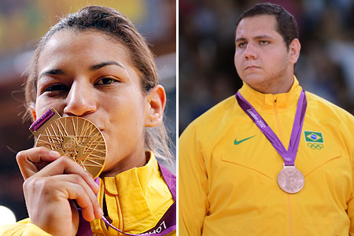

Judô confirma expectativas e bate recorde de medalhas nos Jogos de Londres 2012
Felipe Kitadai, Mayra Aguiar e Rafael Silva levam bronze, Sarah Menezes traz ouro, e modalidade supera marca de Pequim 2008
O judô brasileiro embarcou para Londres com 14 atletas - um em cada categoria - com apenas um objetivo: superar a marca de três medalhas conquistadas em Pequim 2008. As expectativas foram confirmadas, os atletas trouxeram quatro medalhas dos tatames ingleses e a modalidade teve o melhor desempenho da história nas Olimpíadas de Londres 2012.
O primeiro a conquistar um lugar no pódio foi Felipe Kitadai, da categoria ligeiro até 60 kg. Após perder do uzbeque Rishod Sobirov nas quartas de final, ele foi para a repescagem, reagiu e garantiu a medalha de bronze - a primeira do Brasil nos Jogos de Londres.
A segunda medalha do Brasil no judô veio no mesmo dia, mas tinha outra cor: dourada. Sarah Menezes ganhou todas as lutas da categoria ligeiro, até 48 kg, inclusive da campeã olímpica em Pequim 2008 na final e conquistou a primeira medalha do judô feminino.
Após as duas medalhas, o Brasil teve um período de entressafra nos Jogos de Londres. Favoritos, Leandro Guilheiro e Tiago Camilo ficaram no meio do caminho nas suas categorias e não trouxeram medalhas.
No penúltimo dia de competições da modalidade, porém, o Brasil voltou a subir ao pódio, desta vez com Mayra Aguiar. Um dia antes de completar 21 anos, a judoca ganhou da holandesa Marhinde Verkerke por ippon e ficou no terceiro lugar da categoria até 78 kg.
O gigante brasileiro Rafael Silva encerrou a participação do Brasil nos Jogos com outra medalha, o bronze. Silva ganhou do sul-coreano Sung-Min Kim na categoria pesado, acima de 100 kg, e trouxe mais um bronze.
Relembre a trajetória do judô em Londres
O Brasil estreou com o pé direito nos tatames dos Jogos Olímpicos de Londres. No último sábado (28), Felipe Kitadai conquistou o bronze na categoria ligeiro, até 60 kg. No feminino, Sarah Menezes fez ainda melhor e ganhou o ouro na categoria até 48 kg.
A maré de azar começou no domingo (29). Erika Miranda perdeu na estreia para Kyung-Ok Kim, da Coreia do Sul, na categoria até 52 kg, e ficou sem medalha. O mesmo aconteceu com Leandro Cunha, que foi derrotado pelo polonês Pawel Zagrodnik.
Na segunda-feira (30), mais resultados negativos. Após golpe irregular, Rafaela Silva foi eliminada diante de Hedvig Karakas, da Hungria, e ficou sem medalha na categoria até 57 kg. Bruno Mendonça também caiu no segundo combate, contra o holandês Dex Elmont, na categoria até 73 kg.
Leandro Guilheiro perdeu nas quartas de final da categoria até 81 kg na terça-feira (31) e saiu da disputa para o ouro. Na luta da repescagem, perdeu outra e voltou sem medalhas. Antes, Mariana Silva foi derrotada na primeira luta da categoria até 63 kg e ficou sem pódio.
Na quarta-feira (1º), Maria Portela perdeu na primeira luta para a colombiana Yuri Alvear por ippon na categoria até 70 kg e foi eliminada das Olimpíadas 2012.
Já Tiago Camilo venceu três lutas, mas caiu na semifinal diante do sul-coreano Dae-Nam Song e ficou na disputa pelo bronze. Contra Ilias Iliadis, da Grécia, na busca pelo terceiro lugar, outro revés do brasileiro, que voltou para o Brasil sem pódio.
Na quinta-feira (2), Mayra Aguiar ganhou o bronze na categoria meio-pesado, até 78 kg, enquanto Luciano Corrêa perdeu na primeira luta e voltou de Londres sem medalha. Na sexta-feira (3), Maria Suelen Altheman foi eliminada e ficou sem medalha, mas Rafael Silva faturou o bronze.
O R7 transmite os Jogos Olímpicos de Londres ao vivo, em cinco canais exclusivos, 24 horas por dia. E durante os Jogos, além da transmissão ao vivo e com sinais exclusivos, você encontra no portal os vídeos de todos os melhores momentos da maior disputa esportiva do mundo. Até o dia 12 de agosto, Olimpíada é no R7, Record e Record News, os canais oficiais de Londres.
Fonte site R7 Notícias
Newsletter
Quadro de Medalhas
 |
 |
 |
|
| EUA | 46 | 29 | 29 |
|---|---|---|---|
| China | 38 | 27 | 23 |
| Gr√£-Bretanha | 29 | 17 | 19 |
| R√∫ssia | 24 | 26 | 32 |
| Coreia do Sul | 13 | 8 | 7 |
| Alemanha | 11 | 19 | 14 |
| França | 11 | 11 | 12 |
| It√°lia | 8 | 9 | 11 |
| Hungria | 8 | 4 | 5 |
| Austr√°lia | 7 | 16 | 12 |
| Brasil | 3 | 5 | 9 |